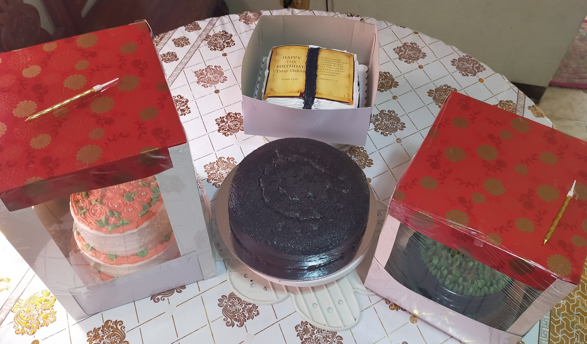

ChocolateCake

Ingredients
3/4 cup all purpose flour
1/4 cup cocoa powder
1/2 ttsp baking soda
1/2 tsp baking powder
1/4 tsp fine salt
1/2 tsp NESCAFÉ Classic
1/2 cup sugar
1/2 cup NESTLE® Fresh Milk
2 tbsp vegetable oil
1 pc small egg
1/2 tsp vanilla extract

Procedure
1. Sift flour, cocoa powder, baking soda, baking powder, salt, Nescafe Classic and sugar into bowl. Combine Nestle fresh milk, oil, egg and vanilla in another bowl. Pour into dry ingredients and mix well until smooth
2. Pour into 6x2-inch round tin can and bake in a preheated 350°F oven for 20 – 30 minutes or until a toothpick comes out clean when inserted in the cake. Set aside to cool completely.
You can go for any icing you want.